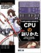

October 31, 2003
[Server] 進化するルータ
Web Caster 7000 の新ファームウェアが公開されたそうです。USB ストレージに対応、接続されたストレージ（HDDなど）をファイル共有や Web サーバで使用できる。また PHP にも対応したらしい（⇒BroadBand Watch）
以前自宅サーバ候補としてあげた Web Caster 7000 ですが、これで本当のサーバですね。Web Caster 7000 にはもともと Web サーバ機能はあったのだけど PC-Card しかストレージに使えなかったり、Web サーバに何を使用しているのかわかりませんでした。PHP が動くということは Apache で動いているとみてほぼ間違いないでしょう。あとは自分で perl を ARM CPU 用にクロスコンパイルしてインストールすれば Movable Type だって動いちゃいそうです。
もともとルータというカテゴリに組込まれているというのがおかしいという話もあるのだけど、OEM 元オリジナルの BRC-114IXR ともどもこのレンジの製品が増えてくると面白そうです。個人的には OEM で Movable Type を最初から組込んだ blog スタートアップセットのようなものが発売されるといいのですが、どこかやらないっすかねぇ？
[Life] TV の音声が聞こえなくなった
今日、TV を ON にしたら音声が聞こえなくなっていた。イヤホン端子からは音声出力が出ているのでどうもスピーカの接触不良っぽい。分解して直そうかと思ったのだけど手持ちのドライバでは無理だった（すっ～～～～ごく長細いドライバがないと分解できない）。とほほっ...
とりあえず外部スピーカをイヤホン端子に繋いで凌ぐことにしたけどなんとかならないものか(;_;)
[FTTH] どうなったのだろう？
USEN に申込んでからもうだいぶたったのだけど音沙汰なしです。うーん、この調子だと FTTH はとうぶん無理そうだな。
October 29, 2003
[PDA] 小型化だけが生きる道か？
シチズンが名刺サイズ大のPDAを開発。法人の業務支援用途向けに発売するそうです（⇒ケータイ Watch）
このサイズで SDIO が使えたり、これはこれでなかなか面白いと思います。しかし、小型化だけが PDA の進化の方向なのかというと疑問です。個人的には薄く・軽く・広い PDA があってもいいのにとずっと思っているのですがなかなかそういうものは出てきません。スペックではなく利用シーンを想定してデバイスをデザインすればもっといろいろなバリエーションが考えられるはずなのですが。携帯電話と PDA の棲み分けが難しくなってきているのもこれが原因のような気がします。
October 27, 2003
[Life] バイオプラスティック
TV でバイオプラスティックを開発した女性科学者の話が流れていた（⇒素敵な宇宙船地球号）
へぇ、この女性（ひと）がつくったんだ。32歳のときに開発に成功したらしい。うーん、私の今の歳が...だからぁ。って、比べてもしょうがないけど。でも、凄い。
ところでヨーロッパのほうではバイオプラスティックを使ったレジ袋の普及がかなりすすんでいるようです。日本では、というか私が生活しているところではまだ見たことがありません。こういうところって日本は遅れているなぁと思ってしまいます。東京都では炭酸カルシウム入りのゴミ袋が都指定ゴミ袋ですが、こんなものよりもバイオプラスティックのレジ袋を条例で義務化したほうが効果が大きいように思う。ひとり暮らしだとそんなにゴミが出ないしレジ袋に入れてゴミ出しできると本当に助かるのですが。
October 25, 2003
[Blog] Movable Type をインストール
うちの iBook に Movable Type をインストールしてみました。とりあえず動作することは確認済。あとは iBook G4 がきて、ドメインを取得すればホームページの BLOG 化も間近でしょうか。
October 23, 2003
[Mac] iBook G4 登場、Buy Now、そして自宅サーバ
Apple からいきなり iBook G4 が登場。で、アップルストアで Buy Now しちゃいました(^^;
ということで自宅サーバ計画のための PC 購入はナシ。iBook G4 が到着したら現在使用中の iBook Dual USB(+ Mac OS X) をしばらく暫定自宅サーバとして使うことになると思います。iBook は発熱が気になるのだけど、まっ、うちのホームページは（悲しいほど(;_;)）アクセス数少ないのでぶんぶん CPU がフル活動するわけではなく大丈夫かなと。
さてと、そうするとマジに自前ドメインをとらないとだめっすね。みんなどこの業者を使っているのかな。前に調べた時は２・３つ安くて管理サーバにログインして自分で管理できるところ(*1)を見つけたのだけど、実際に使っている人の感触を知りたいです。
あとはドメイン名を何にするか考えないと.....うーむ、悩む。
*1) 安いのも大事だけど自分で管理できることは非常に重用
October 19, 2003
October 18, 2003
[Books] 手のひらサイズのデジタルプロジェクター
うーむ、プラスビジョンが発表した『V3シリーズ』ちっちゃぁ。
October 17, 2003
[Books] 萌え系コンピュータ書籍
「CPUの創りかた」という本、内容は面白そうなのだが......うーん、この表紙はちょっとひいちゃう(^^;
昔からコンピュータ関係の人にはそっち系の人が多いけど、それにしてもこういう路線のほうが売れるんでしょうか。自称硬派としては書店で手にとる勇気が...
[Affiliate] Amazonアソシエイト・プログラム
Amazonアソシエイト・プログラムに入りました。ということで、上記のリンクから飛んで 1-click で購入してくれると私のところにペイバックがあります（笑）
うちのページは商品画像を使っていないのだけど、理由として商品画像をまるごとコピーしてそのまま使うことへの懸念があったためです。ほとんどのサイトではそんなことを全然気にせずに使っているのは知っていますがどうしても気になっていました。今回 Amazonアソシエイト・プログラムに入ったのは、Amazon で扱っている商品に限定されますが合法的に商品画像が利用できるためです。ま、アフィリエイトプログラムのひとつの利用法だと思って下さい。
October 16, 2003
[TV] 今日から「TRICK」がはじまるよぉ！
今日から阿部寛と仲間由紀恵の「TRICK」がはじまります。特に３という数字はついていないけど、「TRICK 3」もしくは第３シーズンということになるのでしょうか。とにかく楽しみ(^^)
October 15, 2003
[NewtonScript] 右サイドに移動
埋没しないように NewtonScript 関係を右サイドに移動しました。
October 12, 2003
[Person] Linux Magazine に河口さん
本屋さんで新しく出た Linux Magazine をぱらぱらとめくっていると「河口 信夫」というどこかで見た名前が。これってあの河口さんですよね。なんか懐かしい名前をみつけてうれしくなりました。インタビューではちらほらと「Newton」の名前が（笑）
October 11, 2003
[VTR] ビデオデッキの調子
うちのビデオデッキ、小さな液晶がついているのだけど電源を OFF にしてもその液晶の電源がちゃんと切れなってしまいました。真っ白く、ずっと光ってる。他は異常なさそうなのでとりあえずほっぽいておいたけど、どういうわけかいまは液晶の電源が切れているようです。とりあえずはよかった。このビデオデッキを購入してもう５・６年かな。これは PSX を購入しろというお告げなんだろうか...(^^;
October 8, 2003
[HDD VTR] PSX 正式発表
CEATEC JAPAN 2003 で PSX が正式発表されたみたいです（⇒ZDNet）
具体的な発売日はまだ発表されていませんが、価格やスペックは公表されたようです。PSX のホームページも出来ていますね（⇒PSX ホームページ）
記事でちょっと気になったのが「PS2のリアルタイムOSをデジタル家電用に拡張することで...」というフレーズ。PS2のリアルタイムOSってどんなOS？ ゲーム用のOSのことですか？
懸念されたゲーム中での録画だけど問題なくできるようです。これもそのリアルタイムOSがマルチプロセスを管理しているということなのでしょうか？
でもゲーム機って CD-ROM から毎回ブートしていると思っていたのだけど、通常の PS/PS2 とはゲームのブートプロセスは違ってきますよね。どういう風にしているんでしょう？？？
価格的にはもう１・２万安い価格帯を予想していたのでちょっと落胆。この価格帯なら他社製エントリーマシンの実売価格とさほど変わらない。それと MemoryStick スロットはついているけど MPEG4 録画はできず。この辺はなんだかなぁ...
個人的に気になるのは PSX 用ソフトの開発＆販売環境。せっかく HDD+DVD レコーダーと PS2 のエモーションエンジンがくっついたのだからエフェクト&3Dレンダリングばりばりの DVDオーサリングソフトが出ないとウソでしょう。あと、Ethernet や USB が標準装備なのでインターネット用アプリ（例えばアニメ「lain」の NAVI のような）も欲しいところ。
追記(10/11)：PlayStation OS は ITRON ベースのようです（⇒NIKKEI NET）
October 6, 2003
[Phone] au desgin project 第一段「INFOBAR」登場（⇒au）
展示会などでコンセプトモデルとしては出ていましたが、これが実際に製品として発売されるそうです。au desgin project の第一段ということなので今後は「ISHIKORO」や「talby」なども製品として登場するのでしょうか。携帯キャリア３社の中でもっともユーザアピールのへたな au でしたがこれからが楽しみです。
京セラの Air H" Phone が出たら買換えかなと思ってたのだけど、INFOBAR という選択肢も出てきました(^^;